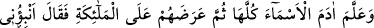
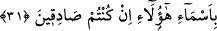
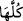
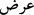

uğraşırdı. Zenbilcilikten kazandığından yerdi, beytü’l-mâldan yemezdi. Mûsâ ve Şuayb
(a.s.) çobanlıkla, Peygamberimiz Muhammed (a.s.) da çobanlık ve ticâretle meşgul
olmuştur. Efendimiz (s.a.) evlerinde bulundukları müddetçe ekseriyâ kendi söküğünü
kendisi dikerdi. Nitekim hadiste buyrulmuştur ki: “Erkeklerin iyilerinin işi terzilik,
kadınların iyilerinin işi de yün eğirmektir.”[232] Ravzatü’l-Ahyâr isimli eserde böyle
gelmiştir.
31. Allah Âdem’e bütün isimleri, öğretti. Sonra onları önce meleklere arz edip:
Eğer siz sözünüzde sâdık iseniz, şunların isimlerini bana bildirin, dedi.
Âyet-i kerîme’deki (
bütün) lâfzı, Âdem’e sadece mahlûkatın isimlerinin değil,
Allah’ın isimlerinin de öğretildiğini gösterir. Âdem (a.s.), mahlûkatın isimlerini
bilmekle meleklerin secdesine lâyık olmuştur. Hak Teâlâ’nın isimlerini bilmesiyle ne
gibi yüksek derecelere lâyık olacağı buna kıyâs edilerek düşünülmelidir. Sonra Allah
Teâlâ isim verilen eşyâyı meleklere arzetti. Herhalde meleklere gösterilen eşyâ;
özellikleri birbirine yakın guruplardan seçilmiş örnekler olmalıdır. İsim verilen eşyâya
râci “onlar” anlamına gelen “hüm” ( ) zamîrinin müennes değil de, müzekker olması,
bu eşyâlar içinde akıl sâhibi varlıkların bulunmasındandır. Akıl sâhibi varlıklar,
diğerlerinden üstün tutularak zamîr müzekker getirilmiştir.
“
”; muhâtaba, özelliklerini öğrenmesi için bir şeyi göstermek demektir. Hadis-i
Şerif’te: “O gün Âdem’in zürriyetini zerreler şeklinde arzetti.”[233] buyurulmuştur.
Allah’ın Âdem (a.s.)’a eşyânın isimlerini öğreterek meleklere arzetmesinin hikmeti, onu
taltîf etmek, bilmediği sırları ve gizli ilimleri öğretmektir. Meleklerin ve diğer
varlıkların, ilimleriyle Âdem’e kafa tutmalarını önlemek için onu öğreterek mükerrem
kılan Allah Teâlâ hazretleridir.
“Eğer sözünüzde doğru iseniz, bunların isimlerini bana söyleyin” diye Allah’ın
meleklere hıtâb etmesi, onları azarlamak ve acziyetlerini göstermek içindir.
Muhâtaba aczini göstermek için yapamayacağı bir işi emretmeye “hitâb-ı tâciz”
denir. Meselâ; her ne kadar imkânsız olsa da âhırette ressamlardan yaptıkları resimleri
diriltmelerinin istenmesi, onların aczini ortaya koymak ve pişman olmalarını sağlamak
içindir. Ne var ki o gün pişmanlık fayda vermeyecektir. “Meleklerin sözün”den murâd,
onların halîfe olma husûsunda kendilerinin daha üstün olduğunu iddiâ etmeleridir.
Bu âyetin; tevhîd ilminden sonra öğrenilmesi gereken en önemli ilmin lisân ilimleri
olduğuna işâret ettiği de söylenmiştir. Çünkü Âdem, lisân bilgisiyle meleklere üstünlük
sağlamıştır. Âyet, aynı zamanda iddiâ edenin delîl getirmekle yükümlü olduğuna delâlet